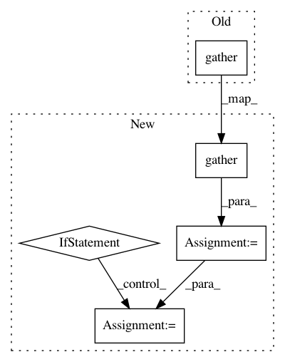

c27dbde9ccec2920f3825538aff07e8533e086ba,catalyst/rl/offpolicy/algorithms/dqn.py,DQN,_base_loss,#DQN#Any#Any#Any#Any#Any#,44
Before Change
gammas = gammas[None, :, None]
// 1 x num_heads x 1
q_values_t = self.critic(states_t).squeeze(-1).gather(-1, actions_t)
// B x num_heads x 1
q_values_tp1 = \
self.target_critic(states_tp1).squeeze(-1).max(-1, keepdim=True)[0]
After Change
// B x num_heads x num_actions
q_values_t = self.critic(states_t).squeeze(-1)
// B x num_heads x 1
action_q_values_t = q_values_t.gather(-1, actions_t)
// B x num_heads x 1
q_values_tp1 = \
self.target_critic(states_tp1).squeeze(-1).max(-1, keepdim=True)[0]
q_target_t = rewards_t + (1 - done_t) * gammas * q_values_tp1.detach()
value_loss = \
self.critic_criterion(action_q_values_t, q_target_t).mean()
if self.entropy_regularization is not None:
value_loss -= \
self.entropy_regularization * self._compute_entropy(q_values_t)
return value_loss
def _categorical_loss(
self, states_t, actions_t, rewards_t, states_tp1, done_t
In pattern: SUPERPATTERN
Frequency: 3
Non-data size: 5
Instances
Project Name: catalyst-team/catalyst
Commit Name: c27dbde9ccec2920f3825538aff07e8533e086ba
Time: 2019-07-24
Author: scitator@gmail.com
File Name: catalyst/rl/offpolicy/algorithms/dqn.py
Class Name: DQN
Method Name: _base_loss
Project Name: tensorflow/mesh
Commit Name: 836cae4069166afc31cb7099dc96f903d1af829d
Time: 2020-06-18
Author: noam@google.com
File Name: mesh_tensorflow/transformer/transformer.py
Class Name: VocabEmbedding
Method Name: ids_to_embedding